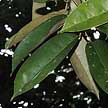
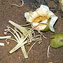
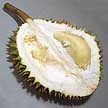
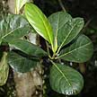
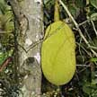
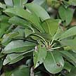
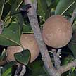
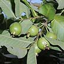
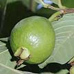
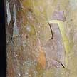

|
|
|
|



Durian
Durio zibethinus |
|
| Shrub
or small tree (3m). Compound leaf 5-7 pairs, small (5-10cm long) leaftlets.
Flowers small, bell-shaped, pink or red. Fruit resembles a small cucumber
(4-6cm). Commonly planted near villages and in gardens. |
Tall
tree (6-10m). Leaves are large, arranged opposite. Flowers large (6cm)
fluffy, bright pink, in clusters. Fruits large (5-7.5cm), oblong to
pear-shaped. Commonly planted near villages. |
Tall
'bushy' tree (4-8m). Leaves large. Flowers tiny on trunk and thicker
branches. Large fruit pods (10–30 cm) pale green turning orange containing
20-60 seeds in a slimy pulp. Commonly planted near villages. |
Tall
tree. Leaves narrow and pointed, silvery or coppery underside. Flowers
pom-pom shaped. Fruit is large, covered with pointy thorns. Commonly
planted near villages. |
|


Nangka tree
Atrocarpus heterophyllus |
|
|


Chiku tree
Manilkara zapota |



Guava tree
Psidium guajava |
| Tall
tree (10-20m). Oval leaves. Flowers small. Fruits huge (30cm-1m).
Commonly planted near villages and in gardens. |
A
tree with a single soft woody stem. The leaf is hand-shaped (50-60cm)
on very long stalks. Flowers white, males in bunches on long stalks,
female on the stem. Commonly planted in villages and gardens. |
Tall
bush (5m). Leaves large. Flowers small, white. Oval berries green
ripening red or purple. Seen at Pulau Ubin's Sensory Trail. |
Small
tree (10m). Leaves oval (6-15cm). Flowers small white. Fruit oval
(6-7cm). Commonly planted in gardens and villages. |
Tree
with sparse, drooping branches (6m). Bark very smooth, coppery orange-brown
mottled greenish or pale yellowish, peeling off in thin flakes. Flowers
white, fruits pear-shaped rippening yellow. Commonly plants in gardens
and villages. |